AI Specialist · Automation, agents and internal tools
I turn complex operational problems into reliable AI systems, including workflow automation, multi-agent systems and secure internal platforms, and take them from first prototype to daily production use.
I design and build AI solutions, from automations and agents to complete internal platforms, that help teams work faster and more accurately.
I came to software through engineering. Years of designing and manufacturing products taught me to see work as a system: how it flows, where it breaks, and how to fix it at the root. That's how I approach every tool I build.
I've worked with AI since the first tools appeared, researching and testing what they could do and where they fell short, and that curiosity became my profession. I work methodically, with close attention to detail and clear documentation.
I sit with each person and have them walk me through their workflow: where their time goes, which tasks repeat, and which are hardest.
I map every step in detail and find where the time and errors actually come from, before deciding what to build.
I design the solution around how people already work, then build it and ship it to production.
I train the team on each tool, document it, and keep improving it from their feedback and support tickets.
Company platforms, AI content generation, computer vision, data and engineering tools.
Blue House Films is a film and social media company of about 100 people. I joined in September 2026 as its AI Specialist, to help the team work faster and more accurately with less repetitive work. I started by replacing scattered tools and manual workflows with one connected internal platform, and shipped 9 tools to production in my first six weeks.
As the main developer on the 3-person R&D team, I own the platform end to end. I design and build the tools, host and secure the server, and set up the company's GitHub and automated backups. I also review other developers' code, supervise the interns, train employees on each new tool, and run regular AI workshops for the developers.
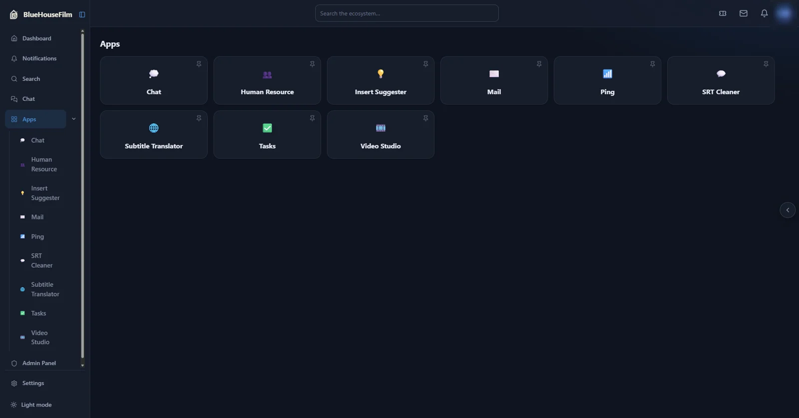
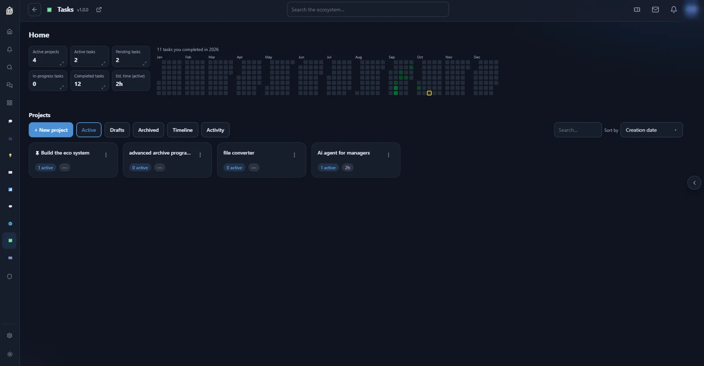
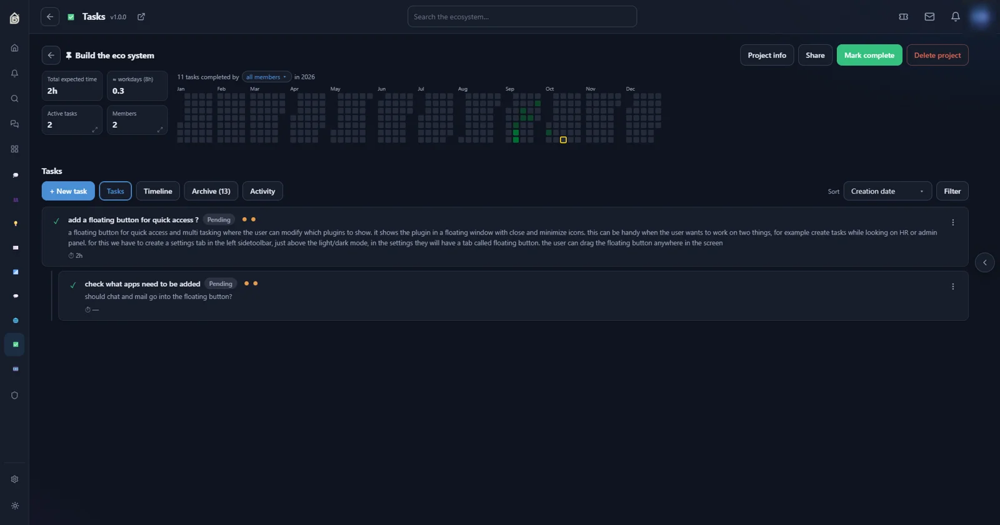
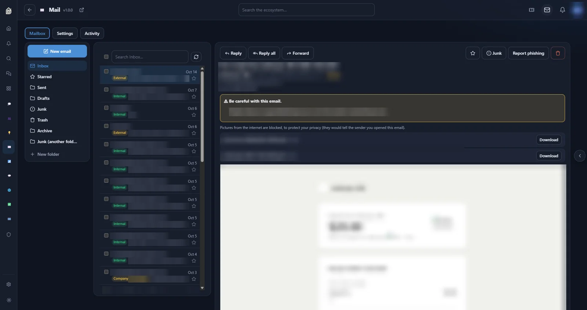
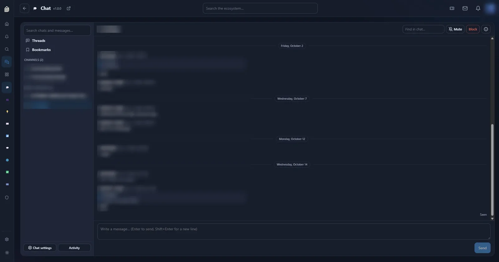
One control centre for running and securing the platform.
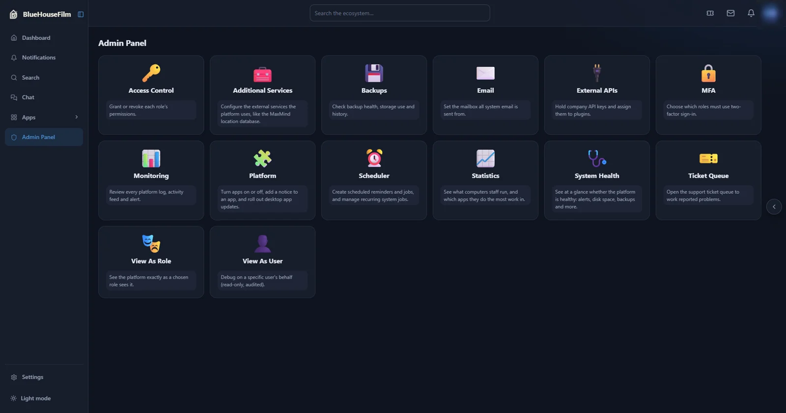
The HR team's workspace for employee records and workplace reports.
Employees report bugs, security issues and feature requests from inside the platform. The developer chats with the person who raised the ticket and marks it resolved, so nothing gets lost in messages.
Collects the hardware specs of employees' computers and shows them on a dashboard, so developers know what hardware they are building for. It guided the decisions when a macOS version of the platform was developed.
A news-intelligence engine for the company's newsrooms.
An AI tool for script writers, designed to read each block of a video script, work out what it's really about, and propose visual inserts (videos, images, articles, X posts) through live search, guided by a bank of past scripts.
An earlier version built by an intern failed, so I reviewed its whole codebase, mapped its logic, and am now redesigning it from scratch.
Freelance project for a client who needed more control than the open-source MoneyPrinterTurbo gives. That tool writes a script, narrates it and assembles stock footage into a video. I replaced its interface with a React app and added AI matching between clips and script, so the footage fits what is being said. About 5,300 new lines of code, and the client was satisfied with the result.
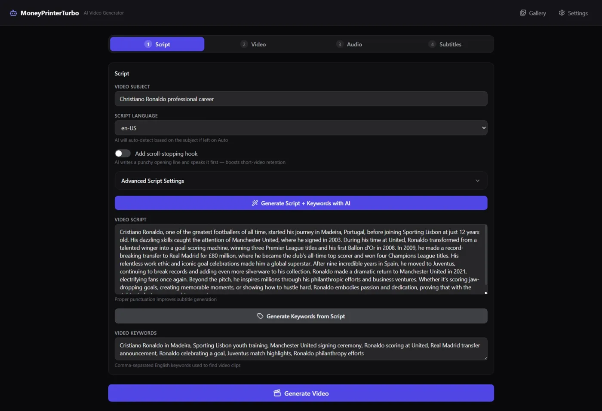
Built for a social media startup that needed to produce post images at volume. Write one structured prompt and generate images from many AI providers at once (OpenAI, Gemini, Stability, Replicate, fal.ai, Ideogram, Cloudflare, Mistral and others). Each request is adapted to what the chosen model supports.
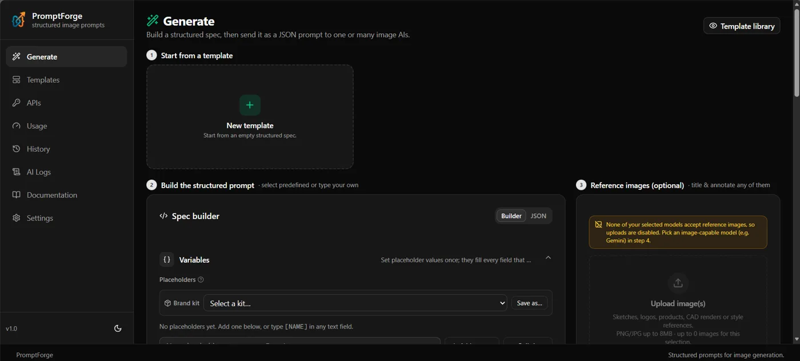
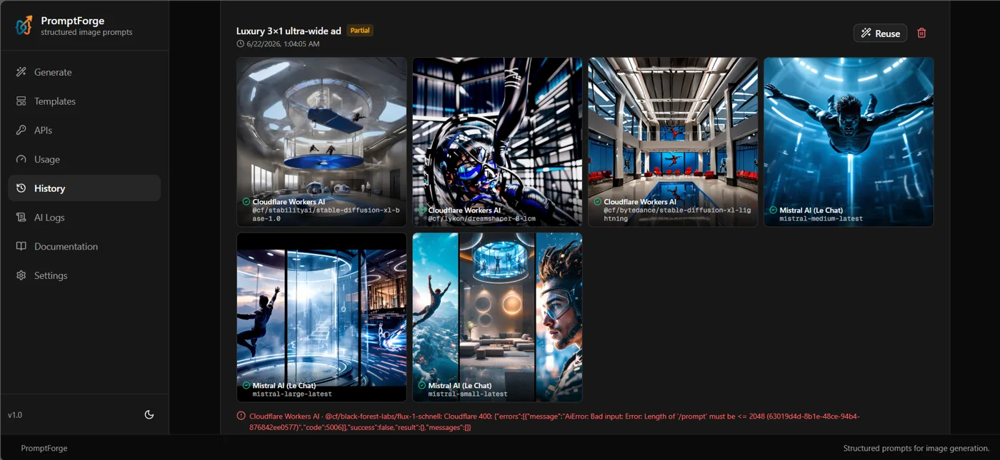
Freelance project for a university professor researching how advertising differs by location. A Windows desktop app that scans recorded video, detects billboards, and exports a folder of billboard images ready for a second AI tool that analyses their content.
Freelance project for a client who wanted market insights and a safe way to test trading strategies. A research toolkit and a strategy simulator that runs on live market data. It was used for simulation and research only, not live trading.
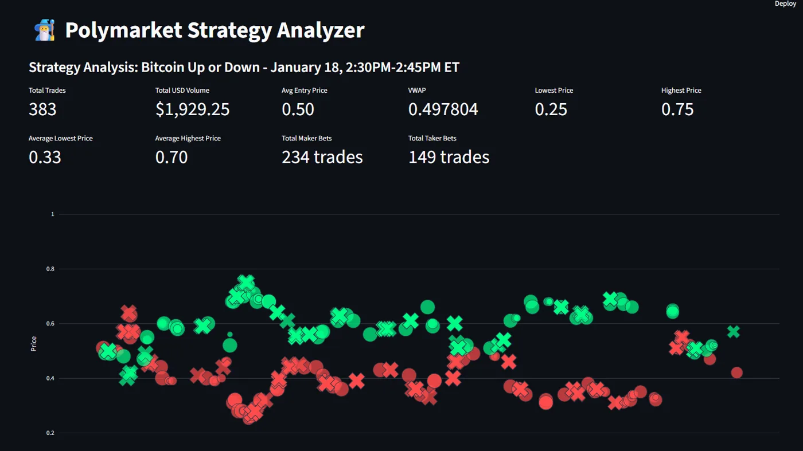
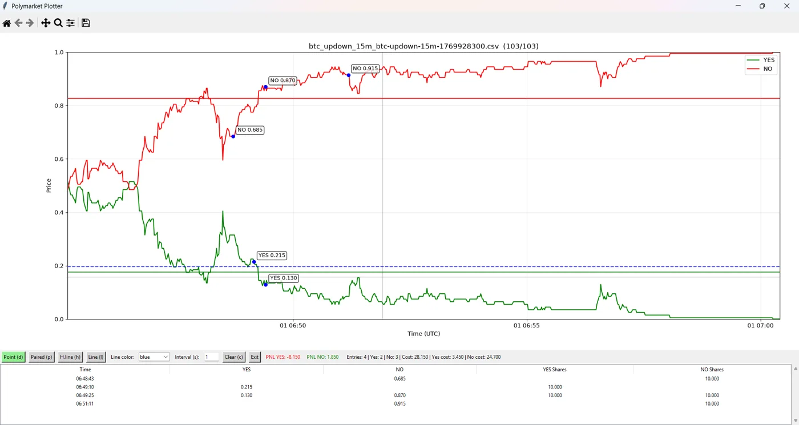
Built for a business advisor, who still uses it. Visual project planning: tasks as connected nodes with dependencies, statuses, costs in several currencies, and templates.
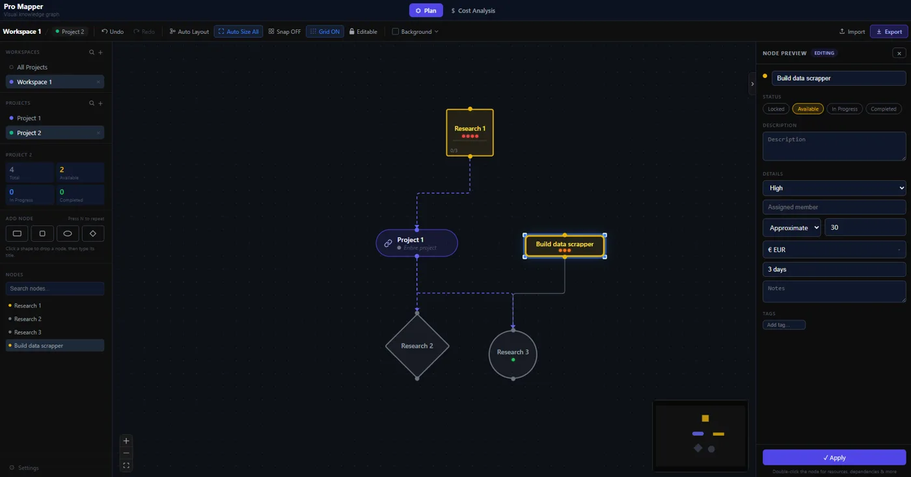
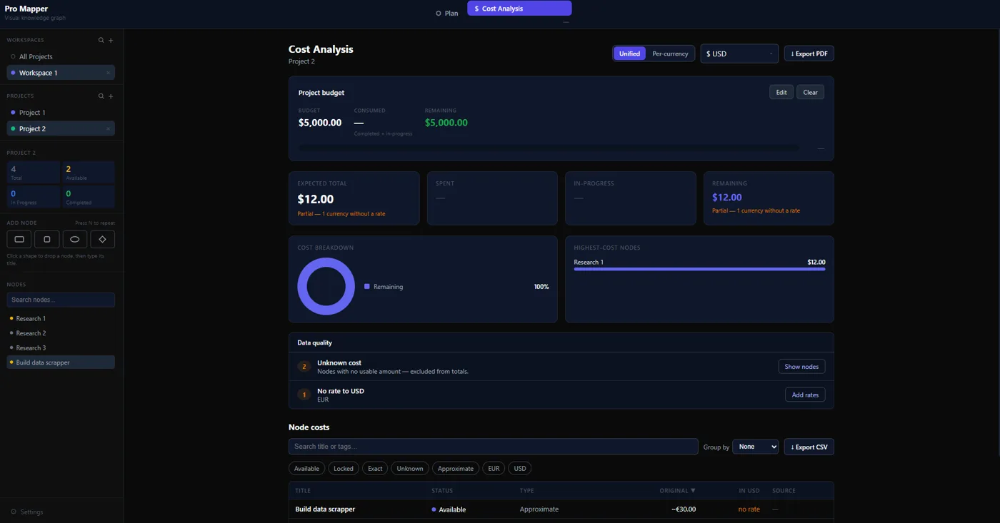
A personal project to help university students chat with their PDF documents, including text, tables and images. I compared models and OCR tools, and concluded that reliable answers from complex PDFs need better layout parsing and citation checks.
Freelance project. A privacy-focused desktop search app that combines results from many search engines and can route traffic through Tor.
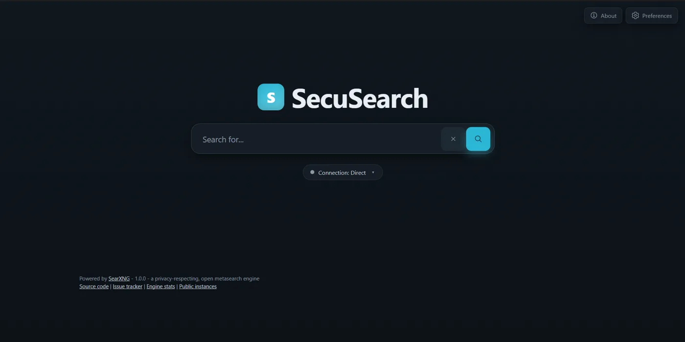
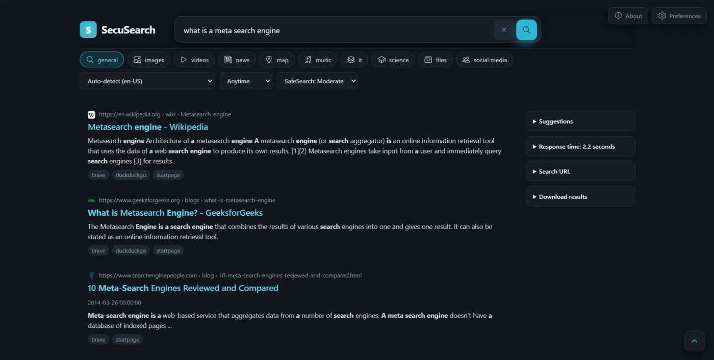
Internal tool for Ghandour Solutions, built to fix a bottleneck in the company's CNC workflow. It cleans and repairs DXF cutting files and previews how the cutting tool will run. On real files it cut sketch elements from 3,383 to 540, and a 7,014-line pattern down to 274.
A journalist investigating the diversion of flydubai flight FZ1073 needed to see what happened. I merged data from two flight-tracking services into an interactive replay with a 3D view, a map, and altitude, speed and climb-rate charts.
A test project for an ID-scanning device: detecting Lebanese ID cards and reading their Arabic numerals. I built the dataset, the augmentation and the training notebooks. It was shelved because reading Arabic numerals reliably needed stronger models than were available to us then.
A client wanted their gate to open automatically for trucks. The system detects and tracks trucks from a live camera and opens the gate through an Arduino relay.
I've been building with AI since ChatGPT first came out in late 2022. Today I use Claude Code and other agentic tools every day, and I build my own agents for jobs that would otherwise take hours by hand.
Four bots, each with its own job. An orchestrator hands out the work and passes requests between them. I use them almost every day, for myself and for friends.
Product photos for a furniture line without a photo shoot. Products designed in SolidWorks are placed into photoreal scenes by Gemini image generation. Because image models get the scale of objects wrong, Claude also builds each scene in Blender through MCP, using the real furniture dimensions.
An online store with an admin panel. When an order comes in, the system shows exactly which manufacturing files to cut. A strict code covers every part of every product and its variants, so each order maps straight to production.
My background is in mechanical design and manufacturing, and I still build software for it.
A platform to help engineers improve mechanical designs using simulation, manufacturing constraints, material data, surrogate models and AI-assisted decisions. I wrote the full product requirements document, with stable requirement IDs, version scopes and verification rules, plus architecture decision records and a matrix linking every requirement to its tests. I then set up the codebase: twelve module skeletons with boundaries enforced at build time, four app shells, and early tests proving the core engines (Gmsh meshing, the CalculiX solver, OpenCascade geometry) worked together. The client halted the project at that point for lack of funding.
Freelance project for a client building an electric-vehicle app, who wanted to show each user a 3D model of their own car inside the app. It includes the full asset workflow: cleaning and compressing the models in Blender, exporting them for the web, and showing them in the browser. The finished code was handed over to the client.
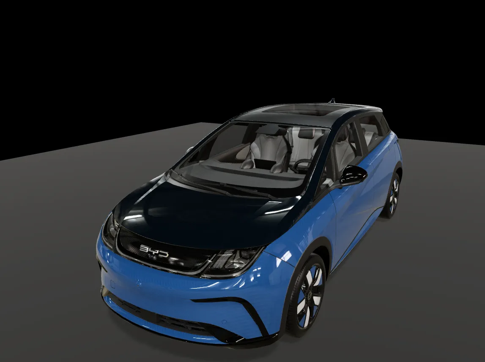
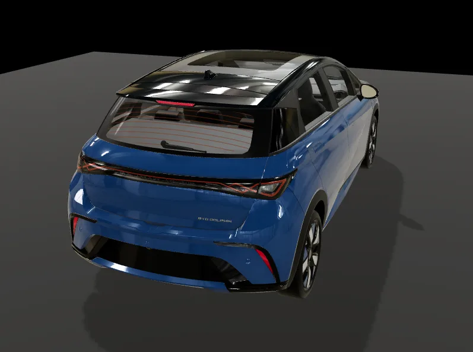
Home automation for energy metering, automated curtains, climate control and safety, plus Arduino and Raspberry Pi prototypes that connect software to real hardware.
Claude, Claude Code, OpenAI Codex, Hermes Agent, MCP, OpenAI / Gemini / Groq / Mistral APIs, LangChain, RAG, embeddings
REST APIs, webhooks, web scraping, Telegram bots, Android emulator automation, n8n (learning)
Python, TypeScript, React, Next.js, FastAPI, Django, Supabase, Postgres, SQLite, Electron, Tauri, Streamlit and Plotly dashboards
Oracle Cloud, Cloudflare R2, Vercel, Docker, GitHub, role-based access control
YOLO, OpenCV, TensorRT, CLIP / SigLIP, Whisper, FFmpeg, ElevenLabs
SolidWorks (certified), Blender, CNC and 3D printing, Arduino, Raspberry Pi
Blue House Films
A film and social media company of about 100 people. I was hired to help the team work faster and more accurately with less repetitive work. I started by replacing scattered tools and manual workflows with one connected internal platform, and shipped 9 tools to production in my first six weeks.
As the main developer on the 3-person R&D team, I own the platform end to end. I design and build the tools, host and secure the server, and set up the company's GitHub and automated backups. I also review other developers' code, supervise the interns, train employees on each new tool, and run regular AI workshops for the developers.
Independent
Desktop apps, AI and computer vision systems, data pipelines and automation tools for clients.
Ghandour Solutions
A company building solar battery systems, industrial machines and custom CNC-made parts. Product design, CAD modelling and CNC machining. I ran, maintained and repaired the FDM 3D printers and 3-axis CNC machines, and did electronics prototyping and automation with Arduino and Raspberry Pi. I was also asked to streamline the company's workflow: I built CurveMill to fix its CNC file bottleneck. I also set up a Notion hub for the business, covering design, manufacturing, sales, finance, inventory, suppliers and staff training. After comparing ERP, PDM and PLM systems, I installed SolidWorks PDM so the engineers always work on the latest approved design files.